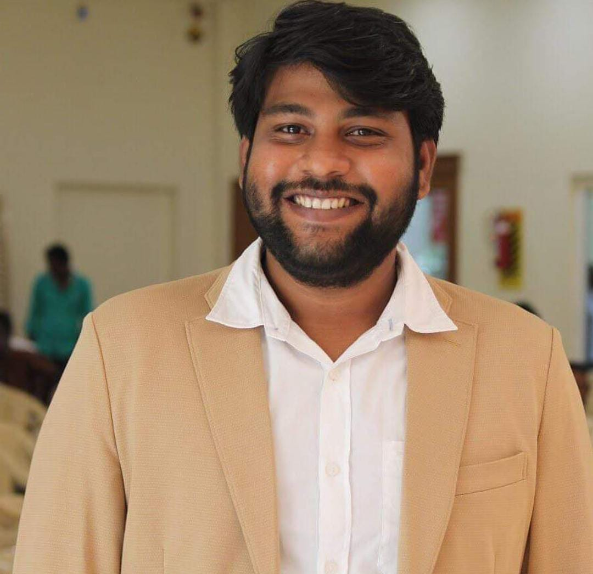

Parithabangal was started by Gopi and Sudhakar. they started the youtube channel named “Parithabangal” on February 08, 2018. As Known. Gopi and Sudhakar got familiar through the Youtube web series in madras Central named Parthibangal. Gopi and Sudhakar are well known for troll and spoof videos. As guessed,mostly worked on spoof and troll videos in Parithabangal and got the audience’s attention.
PARITHABANGAL
TRAGEDY IN PAST,COMEDY IN PRESENT

Parithabangal was started by Gopi and Sudhakar who are ex-team members of Madras Central. Due to some personal issues, they got separated from madras central and started the new youtube channel named “Parithabangal” on February 08, 2018. As Known. Gopi and Sudhakar got familiar through the Youtube web series in mAdras Central named Parthibangal. So, this might be one of the reasons to start their channel named “Parithabangal” Gopi and Sudhakar are well known for troll and spoof videos. As guessed, they mostly worked on spoof and troll videos in Parithabangal and got the audience’s attention. They have posted 180 videos as of February 01, 2020, and acquired 1.83 Million subscribers with 165,707,852 video views. Their videos will get attention the people of all age categories. They majorly do videos on Politics. However, they have only countable number of casts. Some of the casts are listed below
PARITHABANGAL GOPI
Parithabangal Gopi is a very Popular Content Creator in YouTube. Gopi Sudhakar combination is very funny & they
are troll lot of celebrities.
Like Political Leaders, Film Actors, Television actress and more categories. Mostly all aged peoples are like his
video,
because his modulation was awesome.
In the earliest stage Gopi Sudhakar face so many struggles for their life. They are comes to Chennai to search job
but did not get so finally start YouTube channel. After that their life was totally changed then regularly posting
videos.
His Full Name was Gopi Aravindh Raja, fans are called him Gopi. Without gopi performance Parithabangal channel
was nothing. Both are playing big role on this channel.
In 2018 this channel was started and now currently 3.5 million subscribers on YouTube. Weekly once videos are
uploaded & every videos getting one plus million views within 24 hours.
He was acted Tamil Movies also so in future he has bright future on Tamil Film Industry.
That’s why most of creators are start channel and through that move on cinema industries.
Some fans are asking his salary when analyze that Parithabangal Gobi Salary was approximately Rs.6 Lakhs per month.
PARITHABANGAL SUTHAKAR

Parithabangal Sudhakar is a Actor & Social Media Influencer. His acting performance was ultra level,
that’s why he has million of fans in all over Tamil Nadu. Especially all of college students are regularly
watching funny entertainment videos. Actually he make videos with friend of Gopi, both are combination is excellent result.
They are commited 5 plus Tamil movies. In the future surely both persons are fill large place in cinema industry.
Because comedy, modulation was entertained us. One of the major reason they are Troll Political Leaders, Top actors
like Kamal Haasan and more.
That’s also important reason to become a popular on social media sites like Facebook, Instagram, YouTube. Through the
platform most of peoples are get higher chance in Television and Films.
His full Name is Sudhakar and His Instagram official name is Duniya Sudhakar.
After complete the studies he come Chennai with friend of Gopi. But did not getting job, so plan to start a YouTube
channel.
In the beginning time their content was not famous but after going few years everyone starts to like Channel. The reason
was their troll was ultimate and surely we laugh when see the video contents.
In 2018 started channel and now 3.6 million subscribers on YouTube. In the last year 2021 Sudhakar gettting engaged with
his lover.
Most of peoples are search internet to know his salary, Parithabangal Sudhakar Income was approximately Rs.2 Lakhs per
month. Apart from this he also earn via product promotion, business branding on Instagram.
DRAVID SELVAM
Dravid Selvam is a Creator in Parithabangal YouTube channel who have millions followers in social media sites. He is the Creative Director & Marketing Manager in his channel. Recent days Dravid is very popular & trending person on social media networks. Behind the reason is his dedication, hard work, performance and more fans. The single word is Rugged & Chocolate boys differences and troll them to get more views & subscribers.
As a result now every fans are addicted his words. Already Parithabangal Gopi & Sudhakar has millions of fans followers in both of YouTube & Instagram. In the initial days making videos with only Gopi & Suthakar combo but now newly Dravid Selvam performed on the channel. Actually each person has good talents that’s now it’s one of the bst Entertainment YouTube channel who provide funny contents.Current days most of peoples are like to watch entertainment based videos. So those type of creators think like out of box and each day delivered useful and funny contents. Once upon a time this channel creators are troll political persons who are lead role in our Tamil Nadu. But now posting only entertainment videos so we are looking for troll contents in the upcoming concepts.
Moreover he has own YouTube channel (kilaviyal official) with 50k plus subscribers. Everyday uploads one video related to her talents, hard work, modulation things and more. These are secondary channel and have to add fun with useful information.
In the most of videos Dravid Selvam give solo performance and which is getting millions of views on YouTube channel.
Dhuniya Sudhakar and Gopi Aravind Raja where class mates. After graduation, Sudhakar along with Gopi participated in Kalakka Povathu yaaru Season 6 but they were eliminated. Gopi and Sudhakar are popularly known as ‘GoSu’. The duo Gopi and Sudhakar team bagged the best series award provided by Provoke Awards 2017. They left Madras Central and created a new channel Parithabangal which has more than 4.34 million subscribers (as of January 2023). The duo Gopi Sudhakar joined the youtube channel Madras Central as a scriptwriter and later on gained huge popularity by acting in their videos. In September 2017, Gopi and Sudhakar acted in a Youtube series Half Boil on the channel Madras Central along with Swathishta Krishnan and Suhasini Sanjeev. The duo Gopi and Sudhakar team bagged the best series award provided by Provoke Awards 2017. In October 2016, Madras Central published a Gopi starrer spoof video entitled Blue Satta Review of Deepavali travel which received the Best Satire Video award provided by Smile Settai.
LINKS